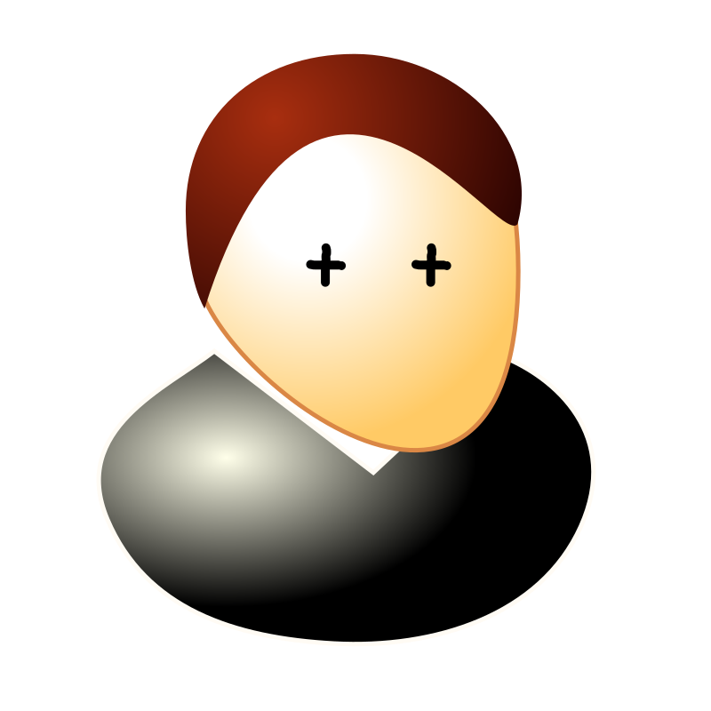

a) Windows and Visual Studio are the most things in the universe. Windows and Visual Studio are the most things in the universe.Windows and Visual Studio are the most things in the universe.Windows and Visual Studio are the most things in the universe.Windows and Visual Studio are the most things in the universe.Windows and Visual Studio are the most things in the universe.Windows and Visual Studio are the most things in the universe.Windows and Visual Studio are the most things in the universe. Windows and Visual Studio are the most things in the universe.Windows and Visual Studio are the most things in the universe. Windows and Visual Studio are the most things in the universe.Windows and Visual Studio are the most things in the universe.Windows and Visual Studio are the most things in the universe.

b) The size of the image is increased by 50 percent.
c) The size of the image is adjusted to 2:1 ratio by considering the width obtained in part (a)